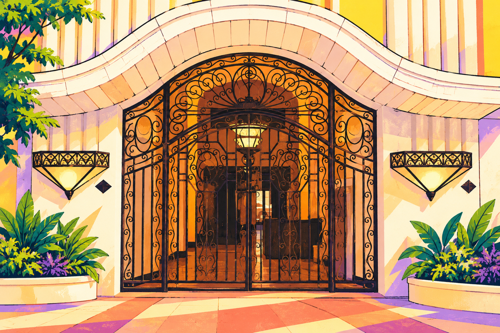

AT THE ENTRANCE
The ironwork gate
Look for the curved white arch, decorative black scrollwork, and geometric wall lights.
A LITTLE HERITAGE SIDE QUEST
From the entrance to your next clay creation.
Tap your starting point. We’ll show you the way.
Room 409 · 4th floor
FOLLOW YOUR CLAY TRAIL
LOOK AROUND. FIND YOUR LANDMARK.
Cartoon landmarks drawn from the building’s own photos. Match these details to what you see around you.
See the original building photos ↗
Look for the curved white arch, decorative black scrollwork, and geometric wall lights.
Recognize the gray steps, warm wooden handrail, and patterned black metal railings.
TAKE THE MAP WITH YOU
Open this directory on your phone, or download the QR code for your brochure and signage.
Download map QR code ↓